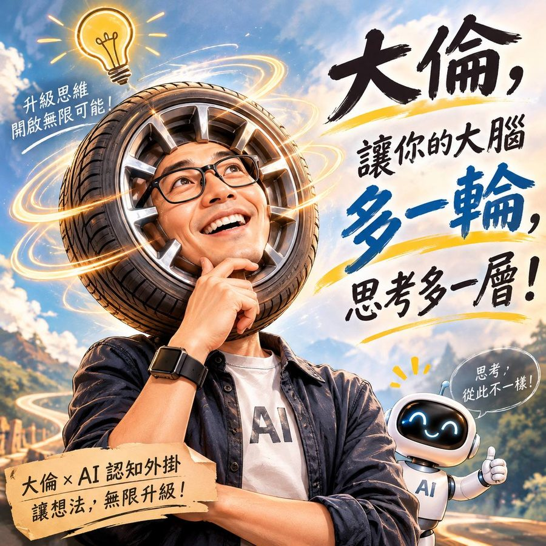
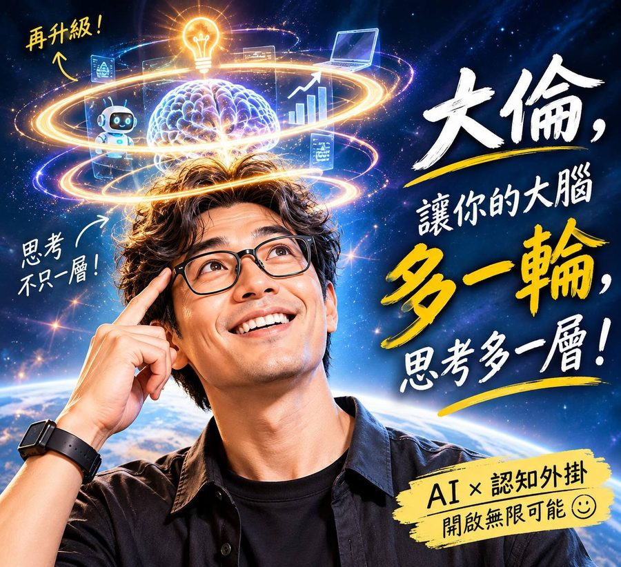

把想法說清楚，
和 AI 一起做出來
一個下午，做出你的第一個網頁 App。選一個喜歡的主題，和 AI 做出翻牌小作品，試過、改過，再帶回家給家人玩。
講師 大倫 Darren・曾任國小老師
由 Alisha 回覆，LINE 上會顯示「宇宙媽媽賞」。
孩子我想做一個籃球小測驗。
AI 做的第一版題目和答案一起出現在畫面上。
孩子試過後我希望玩家先猜，點一下才看得到答案。先改一題，我試試看。
怎麼上
讓你的大腦多一輪，思考多一層
同一個翻牌網頁底板，題目由孩子自己選。可以做英文單字、籃球規則，也可以替自己發明的角色設計一副牌。

說清楚想做什麼
選主題、寫三題，說說你希望誰來玩。
和 AI 做第一版
跟著老師用會寫程式的 AI 助手（AI Agent），把題目放進能操作的網頁。
自己玩一輪再改
和同學交換試玩，找出一個問題，說清楚怎麼改，再點一次確認。
把作品帶回家
存成可離線打開的網頁，展示一個由你決定的改動。
規劃一個下午、4–5 人的實體小班。日期、地點與費用確認後另行通知。想試上或需要借筆電的家庭，可以先用 LINE 詢問。
帶走什麼
回家也能打開的作品
從自己喜歡的題目開始，做成一個家人也能玩的網頁。這是我們想留給孩子的一次「原來我也做得到」。
一件作品
一個離線也能玩的翻牌網頁。
自己改過的原始檔
整個作品就是一個檔案，不用帳號、不綁平台。想加題目或改玩法，回家還能接著做。
一張下一步小卡
記下自己改了什麼，下次還想試什麼。
給爸媽
看孩子自己展示
課程最後預留時間，讓孩子操作給家人看，也說說 AI 幫了哪裡、自己決定了什麼。
回家可以問孩子：「你試完第一版，最想改哪裡？」
我們會守的事
孩子交給我們，這幾件事先說清楚
- 家長同意在先參加、用哪些 AI 服務、作品和照片怎麼用，都先問過家長；孩子也可以隨時說不。
- 不拿大人帳號繞過年齡限制每個 AI 服務的年齡條件先查清楚再用。
- 少給資料不要求孩子把真名、學校、照片或家裡的事輸入 AI。
- 預設不拍臉、不公開作品作品是孩子的；要分享出去，另外問家長和孩子。
- 學會負責任地用查證、著作權、個資保護，以及怎麼認出 AI 說錯了。
- 不打分數、不貼標籤這是一堂動手做作品的課，不是補習，也不承諾提高成績。
講師與課程聯絡

講師｜溝通與 AI 實作
大倫 Darren
曾任國小老師，把從薩提爾與正念學到的溝通方法用在日常 AI 共創，並做出讓人練習說好下一句的《言途》。這堂課，他會帶孩子說清楚需求，試用 AI 做的第一版，再自己決定怎麼改。
看看大倫做的《言途》課程聯絡
Alisha（宇宙媽媽賞）
想了解課程適合幾歲、有哪些試辦時段，或需要借用筆電，都可以用 LINE 問 Alisha。